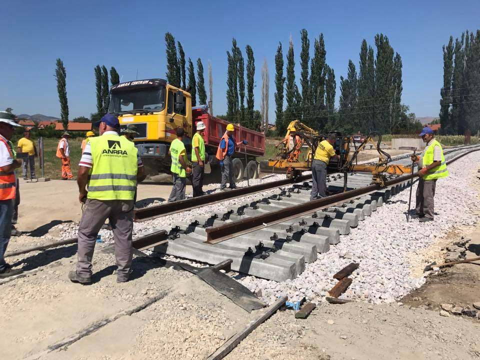
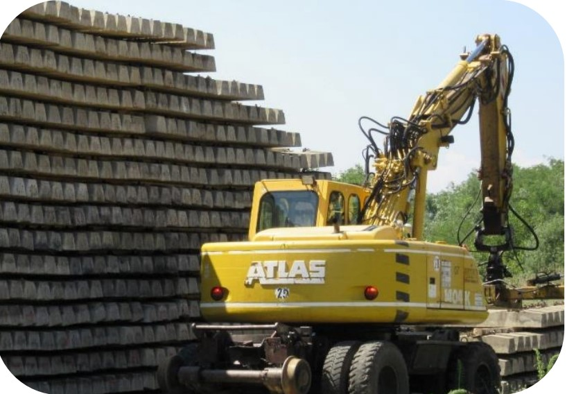

Project: Railway Corridor VIII, Rehabilitation of Section Kumanovo-Belakovce.
Contracting Authority: Public enterprise Railways of the Republic of North Macedonia
Project Description:
The railway section from Kumanovo to Beljakovc is 30.8 km long, being the first of three
general sections of railway tracks along the VIII International Railway Corridor, which
should connect the Republic of Macedonia with the Republic of Bulgaria, starting from
Kumanovo, passing through Beljakovce, Kriva Palanke to Deve Bair, i.e. to the border with
the Republic of Bulgaria.
Finished Projects



Project: Railway Corridor VIII, Rehabilitation of Section Kumanovo-Belakovce


Project: Track Renewal Works on Nogaevci - Negotino Sections Rail Corridor X
Contracting Authority: Public enterprise Railways of the Republic of North Macedonia
Project Description:
This project is part of the Corridor X pan-European corridor with a width of 31 km, and with
the reconstruction of this part, it is intended that trains move at a higher speed of up to 120 km/h
